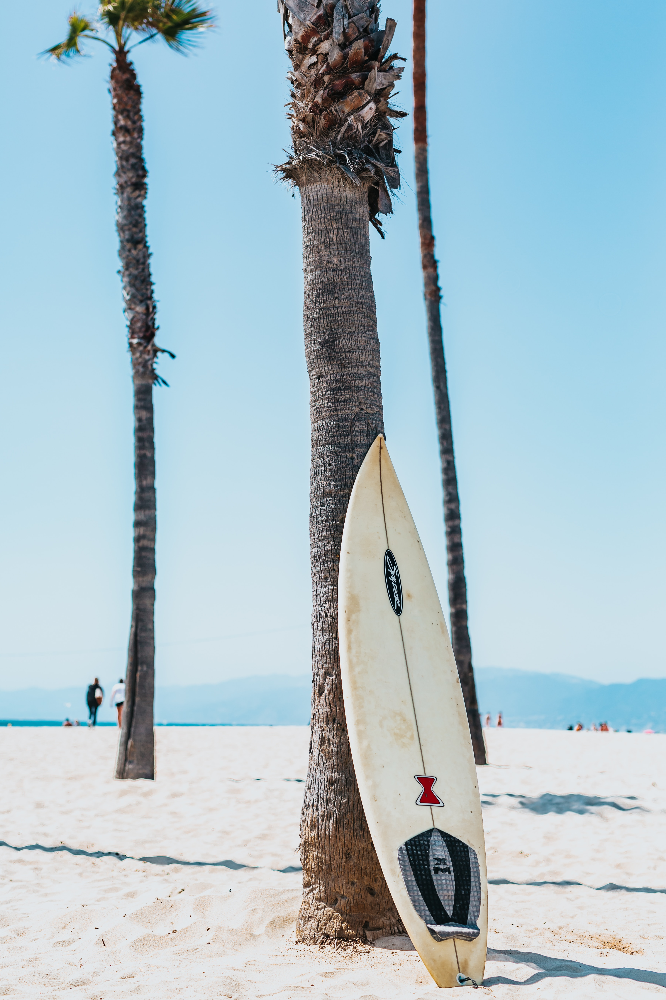
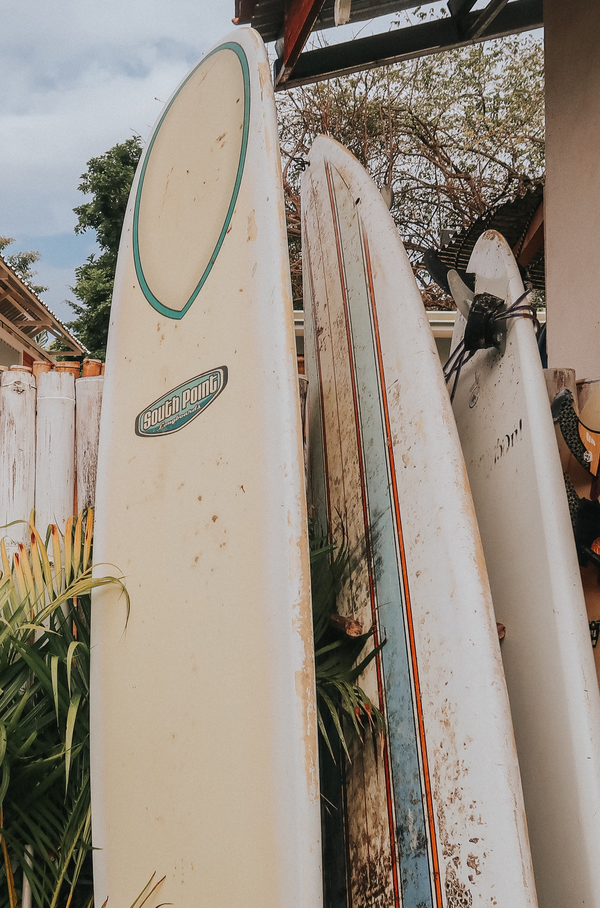
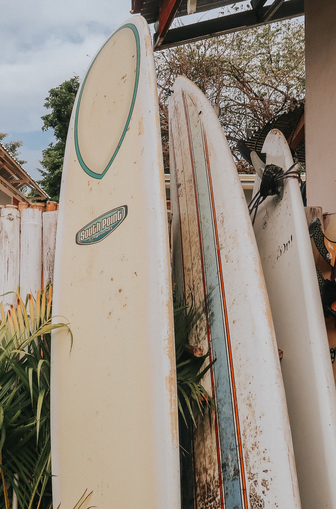

Equipment
The most important piece of equipment a surfer has, or course, is a surfboard. Surfboards are usually hollow and weigh between 4 and 10 kilograms (9-22 pounds). They are usually constructed of manmade materials such as plastic and fiberglass. Most surfboards have slightly raised edges to help with balance. "Fins" beneath the rear of the board allow surfers greater control over their ride. Surfboards are divided into two models, longboards and shortboards. They are both about 5 centimeters (2 inches) thick and 48 centimeters (19 inches) wide. Their only major difference is length.
A longboard is typically about 3 meters (9 feet) long. The nose, or front part of the surfboard, is rounded. Longboards can be slightly wider and thicker than shortboards, making them more stable and buoyant (able to stay afloat). This stability serves two functions. First, it allows surfers to catch smaller, weaker waves. This makes longboards excellent tools for beginning surfers. Second, stability allows experienced surfers to perform more advanced maneuvers, such as walking to the nose of the board and "hanging ten"-curling all ten toes over the side.
Shortboards are about 2 meters (6 feet) long. They have a more pointed nose, and usually have more fins than longboards. Their size and shape make shortboards less buoyant than longboards, which means the waves shortboarders catch must be strong and steep. Shortboards are much easier to maneuver. They are more difficult to ride but are popular because they allow surfers greater control.
 
